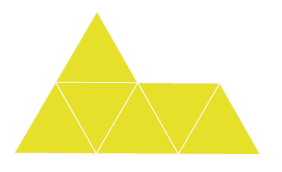
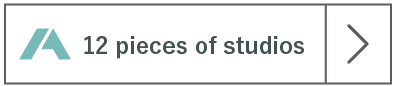

首都大学東京
システムデザイン学部・研究科 インダストリアルアートコース・学域 卒業・修了制作展 平成29年2月6日|土| - 2月8日|月| 10時-17時 Tokyo Metropolitan University Faculty of System Design Industrial Art Graduation Exhibitionインダストリアルアートコース・学域 卒業・修了制作展2017
本コースの卒業・修了制作展は本年度で8回目を迎えました。12の研究室を抱える本コースで学んできた学生たちの作品テーマはプロダクトからメディアの多岐にわたり、同じものはひとつとしてありません。 この度、展示される作品はひとつひとつが私たちの「集大成」です。80人ぐらいの学生たちが、これまで本コースで何を学び、何を積み重ねてきたのかをご覧になってください。

CONCEPT
Piece【ピース】
ピースのモチーフである「ヘキサモンド」は正三角形を６つつなげることでできる図形で、１２種類の形が存在します。インダストリアルアートコースは６つのメディアート分野と６つのプロダクトデザイン分野の１２研究分野から構成され、これらは複合的に関わりあっています。培った知識や経験から様々な形のピースが組み合わさることで、それぞれの学生がもつカタチと成り、この先も拡がり続けてゆくことと思います。ここから新たな一歩を踏み出す学生たちの作品を、是非ご覧ください。
INFORMATION
首都大学東京システムデザイン学部・研究科
インダストリアルアートコース・研究科
卒業・修了制作展 2016
Tokyo Metropolitan University Faculty of System Design Division Industrial Art Graduation Exhibition 2016
- 会期
- 平成29年2月6日(土)-2月8日(月)
10:00~1700 - 会期
- 首都大学東京 日野キャンパス
東京都日野旭が丘6-6 - アクセス
- JR八高線 「北八王子」駅から徒歩13分
- JR中央線 「豊田」駅から徒歩20分
EXHIBITORS

トランスポーテーションデザインスタジオ
Transportation Design Studio
修士
小金丸朗生
小金丸朗生
小金丸朗生
小金丸朗生
小金丸朗生
小金丸朗生
学部
小金丸朗生
小金丸朗生
小金丸朗生
小金丸朗生
小金丸朗生
小金丸朗生
トランスポーテーション
デザインスタジオ
デザインスタジオ
製品・サービス
デザインスタジオ
デザインスタジオ
インターフェース
デザインスタジオ
デザインスタジオ
空間デザインスタジオ
インテリアデザインスタジオ
エルゴノミック
デザインスタジオ
デザインスタジオ
ヴィジュアルコミュニケーション
デザインスタジオ
デザインスタジオ
ネットワーク
デザインスタジオ
デザインスタジオ
インタラクティブ
アートスタジオ
アートスタジオ
ソフトウェア
デザインスタジオ
デザインスタジオ
映像デザインスタジオ
エディティング
デザインスタジオ
デザインスタジオ
BLOG

学外展情報
首都大学東京 システムデザイン学部
インダストリアルアートコース
卒業・修了制作学外展
- 会期
- 平成29年2月16日(木)-2月19日(日)
- 10:00~1700
- 会場
- 東京都美術館
- 東京都台東区上野公園8-36
- http://www.tobikan.jp/
- アクセス
- JR上野駅「公園口」より徒歩7分
- 東京メトロ銀座線・日比谷線上野駅
- 「7番出口」より徒歩10分
首都大学東京 菊竹雪研究室
ヴィジュアルコミュニケーション
作品展 [キリクチ]
- 会期
- 2017年2月11日(土)-18日(土)
- *日曜日休廊 10:00-18:00
- 公開講評回+オープニングパーティー
- 2017年2月11日(土)
- 18:00-19:30
- 会場
- ギャラリー てん
- 東京都港区新橋2-20-15
- 新橋駅前ビル1号館8F
- http://www.gallery-ten.tokyo/